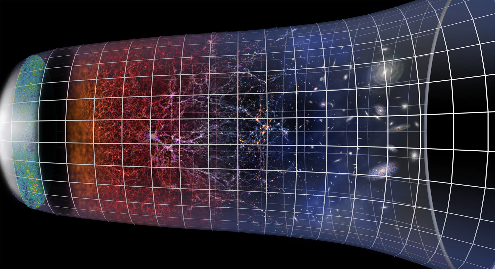

Welcome, brave explorer. We have finally developed the technology that enables us to put an individual on a photon, and that is you! You have been chosen. Meet your cosmic colt—the Photon Stallion—ready to buck you off at 186,000 miles per second!
You hop on, knowing that if a bull couldn't hurt you, a measly photon can't either. You saddle and prepare for the ride. You need infinite energy just to stay on, but we'll leave that caveat for later. For now, you hold on for dear life while trying to relax. If Higgs could tame his boson, then you could tame a measly photon.
No saddle sores here—time won't even dare catch up to you! The countdown begins, and even Schrödinger is on the edge of his seat. 3, 2, 1, and it's already over! You're at the beginning, middle, and end of the ride at the exact same time. But how?
So what's going on here? Well, a photon travels at the speed of light, and according to the laws of physics, when something travels that fast, time ceases to exist relative to it. Time, as we know it, is foreign to a photon—it has no idea what that is. The faster you travel, the slower time ticks for you, and at the speed of light, time stops. When that happens, everything you experience occurs simultaneously. Let's say you've been traveling at the speed of light since you were born. Every moment you experience, from the moment you're born to the moment you die, happens at the exact same time from your point of view.
You wouldn't be able to turn your head on the ride because you wouldn't have time to. Everything you'd see in front of your eyes would be everything you'd ever see on the ride. Every single moment is in front of you at the same time. What blows my mind is that this isn't science fiction—it's happening all around us. A photon, from the moment it is created during the Big Bang to the moment it hits your eyes, experiences time instantaneously—14 billion years, all in a single moment.
Photons aren't just weird particles that serve no purpose other than showcasing their cool properties. They carry the fingerprint of the object they bounced off. They are why we can see. Photons are light; they enable us to experience all the colors of the rainbow. Photons from the Sun rain down on Earth, hit an object, and reflect into your eyes, allowing you to see it. They also constitute all the energy in the universe (aside from dark energy). The cosmos would be barren without them. Without photons, the universe would be blind.